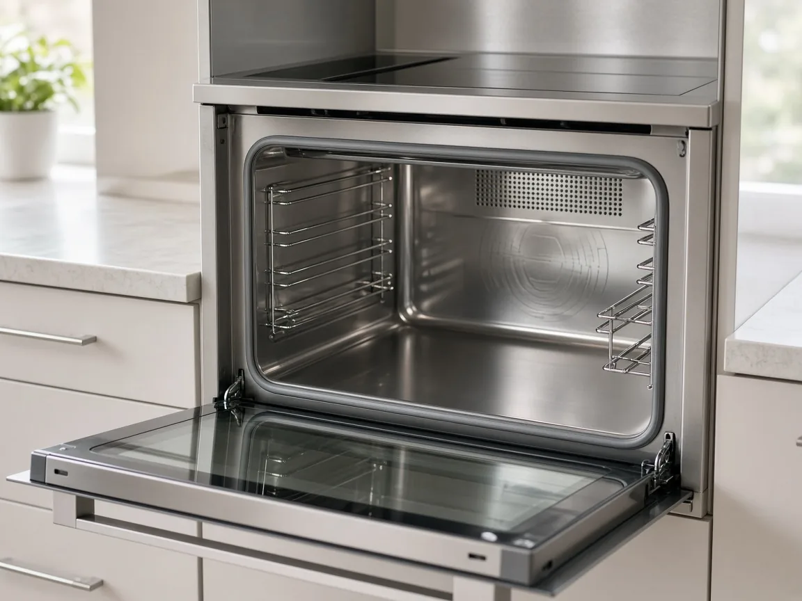
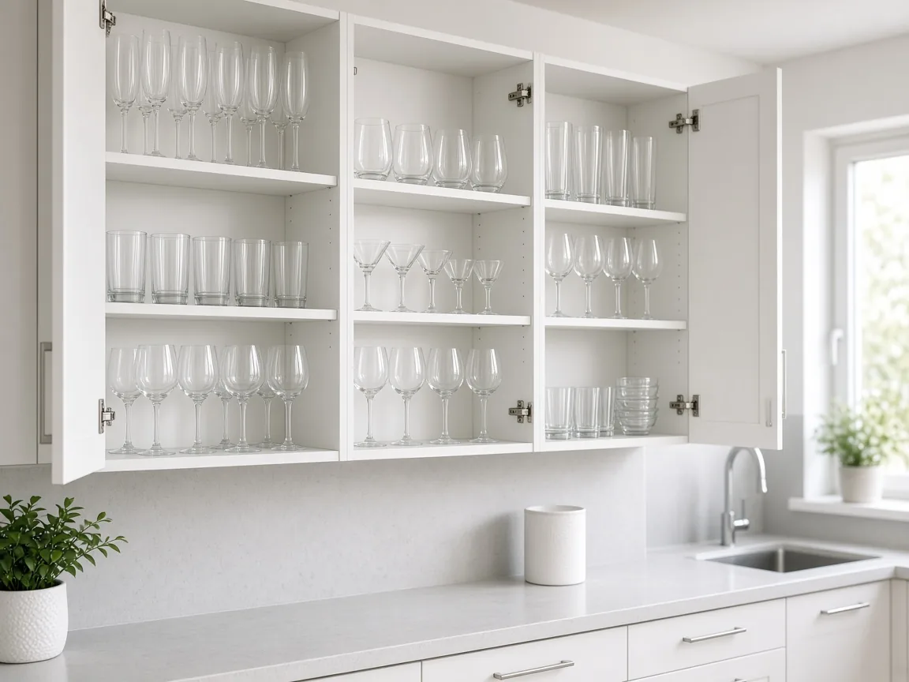
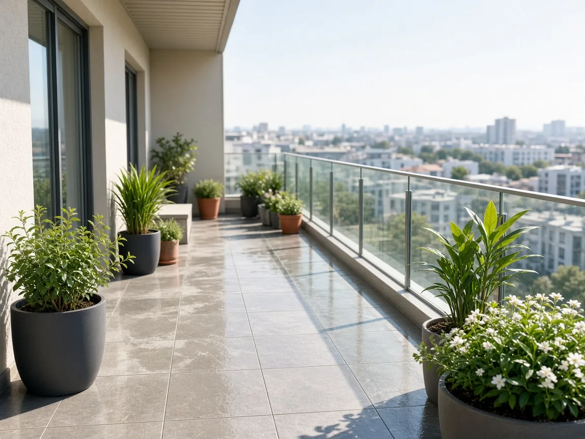
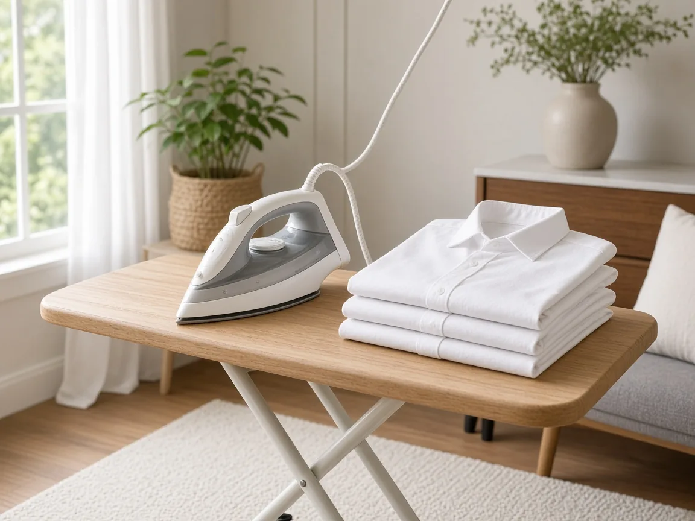
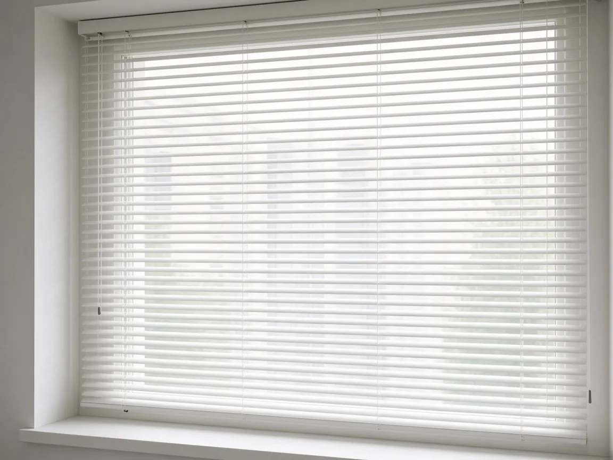
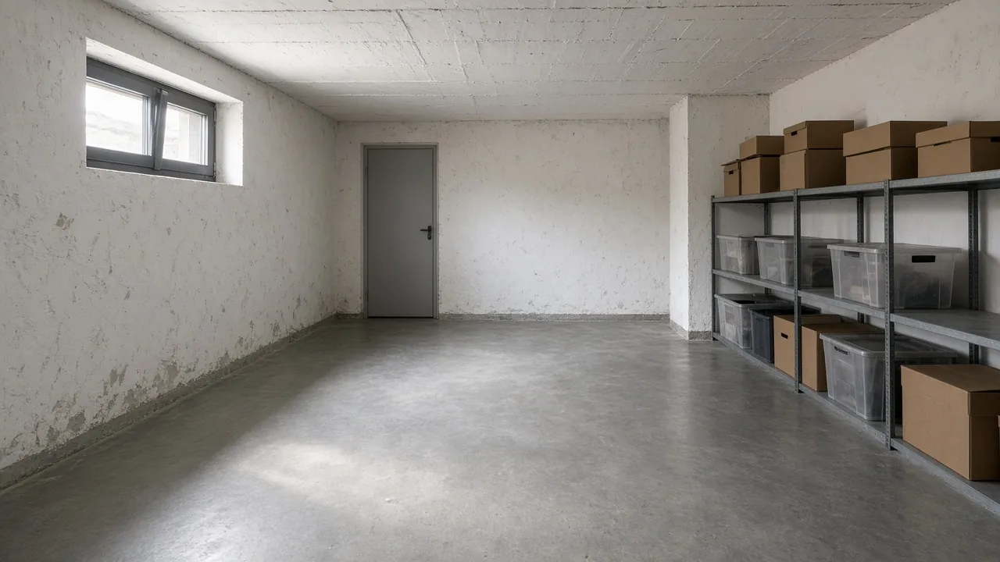
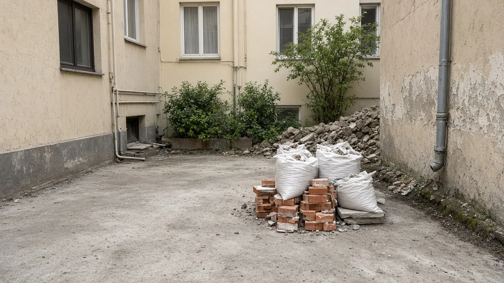

Usluge za vaš dom
Cenovnik usluga
Jedno je održati stan urednim, drugo je očistiti ga od temelja. Ispod su dve najčešće usluge — šta tačno ulazi i koliko sati treba, dogovorimo pre dolaska.
Redovno čišćenje
1.800 RSD / sat
Za stanove i kuće koji se već drže u redu, samo treba neko da redovno prođe. Usisamo i operemo podove, obrišemo prašinu, prođemo kuhinju i kupatilo, iznesemo smeće — bez velikih zahvata, da prostor ostane uredan između termina.
Cena zavisi od veličine stana i sati rada.
Generalno čišćenje
2.300 RSD / sat
Kad treba da se ide dublje, ne samo brzo održavanje. Prolazimo sobu po sobu — kuhinju i kupatilo temeljitije, kamenac, lajsne, vrata i prekidače, plus podove. Dobro za jednokratno čišćenje kad stan dugo nije detaljno rađen.
Cena zavisi od veličine stana i sati rada.
Čišćenje nakon renoviranja
od 2.800 RSD / sat
Kad majstori odu, ostane prašina i tragovi radova. Mi to počistimo da stan opet bude za život.
Cena zavisi od veličine stana i sati rada.
Čišćenje pre useljenja / nakon iseljenja
od 2.300 RSD / sat
Stan spreman za nove stanare, ili uredan kad se iseljavate — bez prašine u ćoškovima.
Cena zavisi od veličine stana i sati rada.
Dodatna pažnja za vaš dom
Dodatne usluge

Kuhinjski aparati i elementi
3.500 RSD

Čišćenje kuhinjskih elemenata iznutra
od 2.500 RSD

Detaljno čišćenje terase
od 1.500 RSD / sat

Peglanje
1.500 RSD / sat

Pranje roletni
od 1.000 RSD / prozor

Pranje prozora
700 RSD / prozor
Cena zavisi od veličine stana i sati rada.
Zatraži dodatnu usluguZa zgrade, firme i posebne poslove
Čišćenje poslovnog prostora
Zgrade, kancelarije, podrumi i odnošenje šuta — termin i obim dogovaramo pre dolaska.

Čišćenje zgrada
Ulazi, hodnici, stepeništa i zajedničke prostorije.
od 1.500 RSD / sat
Zatraži procenu
Čišćenje poslovnog prostora
Kancelarije, open space i zajednički prostori firme.
od 1.500 RSD / sat
Zatraži procenu
Ordinacije i kancelarije
Higijensko čišćenje ordinacija, prijemnih i radnih prostorija.
od 1.500 RSD / sat
Zatraži procenu
Čišćenje podruma
Podovi, prašina i dostupne površine u podrumu ili ostavi.
od 1.500 RSD / sat
Zatraži procenu
Cena zavisi od veličine stana i sati rada.
Za redovne termine
Redovno održavanje
Za klijente koji zakazuju čišćenje svake nedelje ili više puta mesečno možemo ponuditi posebnu cenu.
4+ čišćenja mesečno – cena po dogovoru